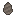

①子ども 石の両面を打ち欠いた、なみだ形の握り斧。柄はなく、手でにぎって使う。
②学生 火打ち石3つ＋たたき石（戻る）で作る。斧として木を切れる（木の斧より少し速いが、柄がないので振りはおそい）。火打ち石か黒曜石で直せる。バニラの石の斧は、このあとの「柄を付けた石器」にあたる。
③大人 ハンドアックスはアシュール石器（フランスのサン・タシュールの名から）の代表。約170万年前にアフリカで現れ、100万年以上も形を変えずに作られ続けた。両面を左右対称に打ち欠くには、完成形を頭に思いえがく力が要る。
④ガチ 最古のアシュール石器はケニアのコキセレイ（約176万年前）やエチオピアのコンソ（約175万年前）。石の先を木の柄にくくりつける「着柄」は約50万年前（南アフリカのカトゥ・パン）からといわれ ⚠️、バニラの石の道具（丸石＋棒）はこちらにあたる。